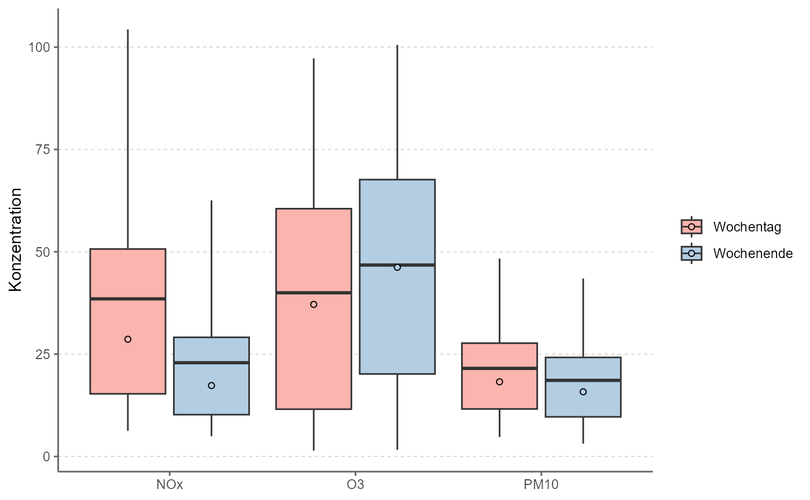

rOstluft::format_rolf() format) as boxplots
comparing weekdays to weekendsR/ggperiodic.R
ggweekend.Rdggplot2-wrapper to summarise and plot data (of rOstluft::format_rolf() format) as boxplots
comparing weekdays to weekends
ggweekend(
data,
y = "value",
nmin = 3,
fun = list(middle = "mean", middle2 = "median", ymin = "percentile05", lower =
"percentile25", upper = "percentile75", ymax = "percentile95"),
...
)a data.frame or tibble containing the data
a character string specifying the taget variable to be summarised, usually "value".
outcomes of cut_timeseries_periodic().
numeric, minimum number of values for fun, if n < nmin: NA is returned
function or list of functions for summary, can be named (then the outut stat is named after the function's name);
Strings matching the regular expression /^percentile([0-9]){1,2}$/i are converted into the respective function.
"percentile95" => function(x, ...) quantile(x, 95 / 100, ...)
further arguments passed on to ggplot2::geom_boxplot().
ggplot2::ggplot() object
library(ggplot2)
fn <- rOstluft.data::f("Zch_Stampfenbachstrasse_2010-2014.csv")
data <-
rOstluft::read_airmo_csv(fn) %>%
dplyr::filter(parameter %in% c("NOx", "O3", "PM10")) %>%
rOstluft::resample(new_interval = "h1")
ggweekend(data)
# change y axis title using bquote
ggweekend(data) +
ylab(bquote("Konzentration " ~ 0[3] ~ ", " ~ PM[10] ~ "(" ~ mu ~ "g " ~ m^{-3} ~ "), NOx (ppb)" ))
# change fill scale
ggweekend(data) +
scale_fill_brewer(type = "qual", palette = "Pastel1")
#> Scale for 'fill' is already present. Adding another scale for 'fill', which
#> will replace the existing scale.
